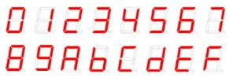
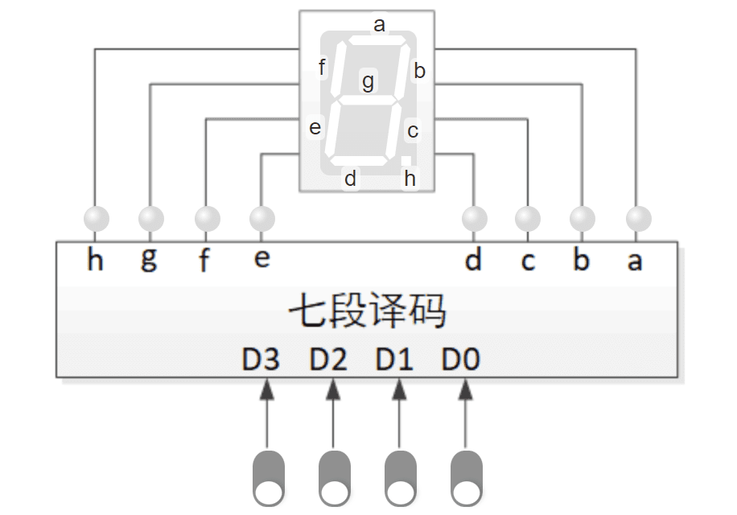

译码器实验
参考设计：2-4译码器
图 1. 2-4译码器的虚拟面板
例 1. 2-4译码器的设计代码
module Decode2_4 (
input wire iEn,
input wire [1:0] iA,
output logic [3:0] oY
);
always_comb
begin
if (iEn)
case (iA)
2'b00 : oY=4'h1;
2'b01 : oY=4'h2;
2'b10 : oY=4'h4;
2'b11 : oY=4'h8;
default:oY=4'bx;
endcase
else
oY=4'b0;
end
endmodule例 2. 2-4译码器的实例化代码
wire [3:0] out;
Decode2_4 decoder1(.iEn(en), .iA(in), .oY(out));实验任务：七段译码器
（1）用HDL设计七段译码器模块，按照如下端口声明编写。
module SevenSegDecode(
input wire [3:0] iData,
output logic [7:0] oSeg
);输入是4位二进制数，输出是与输入数值相对应的数码管段码，要求包含小数点但小数点不亮，0～F共16个数据的显示效果如图 2。编写完成后保存文件，文件名与模块名相同，即SevenSegDecode.sv。

图 2. 七段数码管字形
| 由于“9”、“1”等数字可能有多种字形表示，为便于机器考核，请按照图 2所示字形编写译码器。 |
（2）实例化七段译码器模块。
打开第一个实验的VirtualBoard.sv模板文件，将实例化七段译码器的代码添加到该模块内，并按照图 3所示虚拟面板连接端口。

图 3. 七段译码器面板
图中数码管等虚拟元件的序号可通过实验系统查看，为节省查对时间，例 3给出了与虚拟面板一致的端口连接代码。标记①的位置需要完成实例化七段译码器。
例 3. 七段译码器虚拟面板对应的端口连接
/****** Replace input ports with internal signals *******/ wire [3:0] hex = S[11:8]; /************* The logic of this experiment *************/ wire [7:0] sd; //七段译码器模块实例化 (1) /***** Internal signals assignment to output ports ******/ assign SD1 = sd; //连接数码管1 assign L[7:0] = sd; //用LED显示7段电平值
例 3使用内部变量如 hex、sd 替换了输入输出端口，这些变量应在实例化七段译码器时映射到七段译码器模块的端口，最终的效果是4个拨动开关S11～S8连接到七段译码器模块的输入端口iData，七段译码输出oSeg连接到数码管SD1，同时用LED指示灯显示每个段的驱动电平。
在自己的设计中，内部变量的名称不必与示例相同。
（3）编译成功后在实验平台验证。
（4）【选做】修改七段译码器模块，使其能显示“P”、“L”等尽可能多的字符。提示：输入改为5位二进制，虚拟面板增加一个开关。所扩充字符的5位编码自己规定，但0～F十六个编码要与基本任务要求一致。